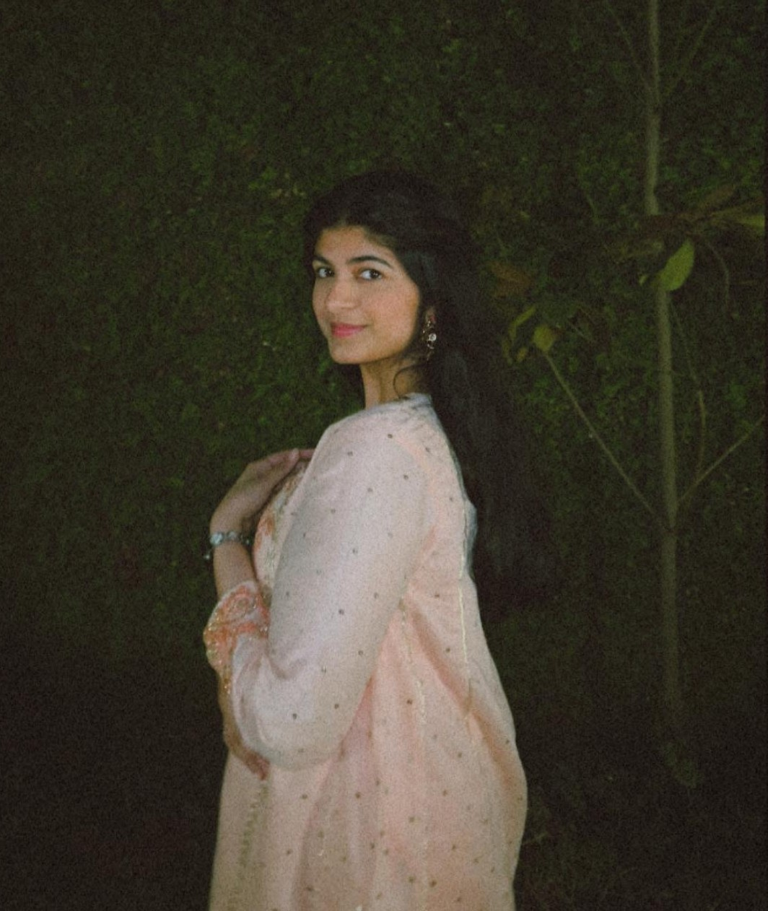
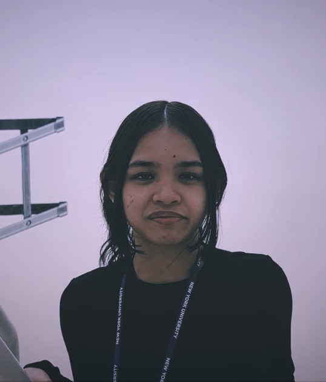

Izza Tirmizi - Actress
Izza is a senior majoring in Political Science and minoring in IM. She is one of the actresses in the film.
Xiaotan Fan - Director and Producer
Xiaotian Fan is a sophomore majoring in Music. He directed, produced, and edited the film.

Mikaela Jonbenet Mariño - Actress
Mikaela is a freshman majoring in Art and Art History. She is one of the actresses in the film.